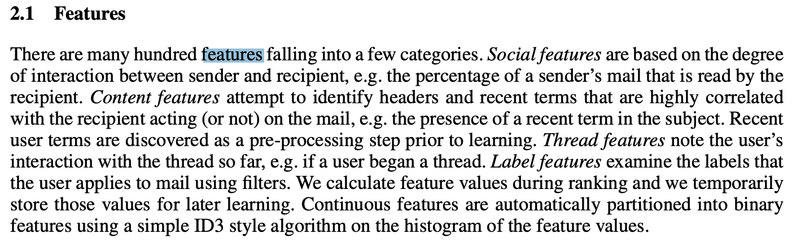
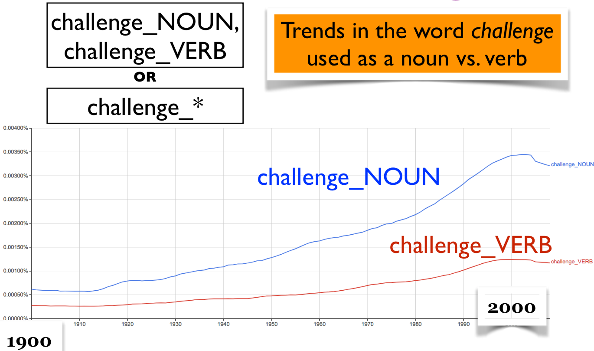

Appendix A: Common features used in text classification#
Bag of words#
So far for text data we have been using bag of word features.
They are good enough for many tasks. But …
This encoding throws out a lot of things we know about language
It assumes that word order is not that important.
So if you want to improve the scores further on text classification tasks you carry out feature engineering.
Let’s look at some examples from research papers.
Example: Label “Personalized” Important E-mails:#
Features: bag of words, trigrams, regular expressions, and so on.
There might be some “globally” important messages:
“This is your mother, something terrible happened, give me a call ASAP.”
But your “important” message may be unimportant to others.
Similar for spam: “spam” for one user could be “not spam” for another.
Social features (e.g., percentage of sender emails that is read by the recipient)
Content features (e.g., recent terms the user has been using in emails)
Thread features (e.g., whether the user has started the thread)
…
The Learning Behind Gmail Priority Inbox#

Feature engineering examples: Automatically Identifying Good Conversations Online#

Term weighing (TF-IDF)#
A measure of relatedness between words and documents
Intuition: Meaningful words may occur repeatedly in related documents, but functional words (e.g., make, the) may be distributed evenly over all documents
where,
\(tf_{ij}\) → number of occurrences of the term \(w_i\) in document \(d_j\)
\(D\) → number of documents
\(df_i\) → number of documents in which \(w_i\) occurs
Check TfidfVectorizer from sklearn.
N-grams#
Incorporating more context
A contiguous sequence of n items (characters, tokens) in text.
CPSC330 students are hard-working .
2-grams (bigrams): a contiguous sequence of two words
CPSC330 students, students are, are hard-working, hard-working .
3-grams (trigrams): a contiguous sequence of three words
CPSC330 students are, students are hard-working, are hard-working .
You can extract ngram features using CountVectorizer by passing ngram_range.
from sklearn.feature_extraction.text import CountVectorizer
X = [
"URGENT!! As a valued network customer you have been selected to receive a $900 prize reward!",
"Lol you are always so convincing.",
"URGENT!! Call right away!!",
]
vec = CountVectorizer(ngram_range=(1, 3))
X_counts = vec.fit_transform(X)
bow_df = pd.DataFrame(X_counts.toarray(), columns=vec.get_feature_names_out().tolist(), index=X)
---------------------------------------------------------------------------
NameError Traceback (most recent call last)
Cell In[1], line 10
8 vec = CountVectorizer(ngram_range=(1, 3))
9 X_counts = vec.fit_transform(X)
---> 10 bow_df = pd.DataFrame(X_counts.toarray(), columns=vec.get_feature_names_out().tolist(), index=X)
NameError: name 'pd' is not defined
bow_df
ASIDE: Google n-gram viewer#
All Our N-gram are Belong to You
https://ai.googleblog.com/2006/08/all-our-n-gram-are-belong-toyou.html
Here at Google Research we have been using word n-gram models for a variety of R&D projects, such as statistical machine translation, speech recognition, spelling correction, entity detection, information extraction, and others. That's why we decided to share this enormous dataset with everyone. We processed 1,024,908,267,229 words of running text and are publishing the counts for all 1,176,470,663 five-word sequences that appear at least 40 times. There are 13,588,391 unique words, after discarding words that appear less than 200 times.”
from IPython.display import HTML
url = "https://books.google.com/ngrams/"
HTML("<iframe src=%s width=1000 height=800></iframe>" % url)
Aside: Google n-gram viewer#
Count the occurrences of the bigram smart women in the corpus from 1800 to 2000

Aside: Google n-gram viewer#
Trends in the word challenge used as a noun vs. verb

Part-of-speech features#
Part-of-speech (POS) in English#
Part-of-speech: A kind of syntactic category that tells you some of the grammatical properties of a word.
Noun → water, sun, cat
Verb → run, eat, teach
The ____ was running.
Only a noun fits here.
Part-of-speech (POS) features#
POS features use POS information for the words in text.
CPSC330/PROPER_NOUN students/NOUN are/VERB hard-working/ADJECTIVE
An example from a project#
Data: a bunch of documents
Task: identify texts with permissions and identify who is giving permission to whom.
You may disclose Google confidential information when compelled to do so by law if you provide us reasonable prior notice, unless a court orders that we not receive notice.
A very simple solution
Look for pronouns and verbs.
Add POS tags as features in your model.
Maybe look up words similar to disclose.
Penn Treebank part-of-speech tags (bonus)#

You also need to download the language model which contains all the pre-trained models. For that run the following in your course
condaenvironment.